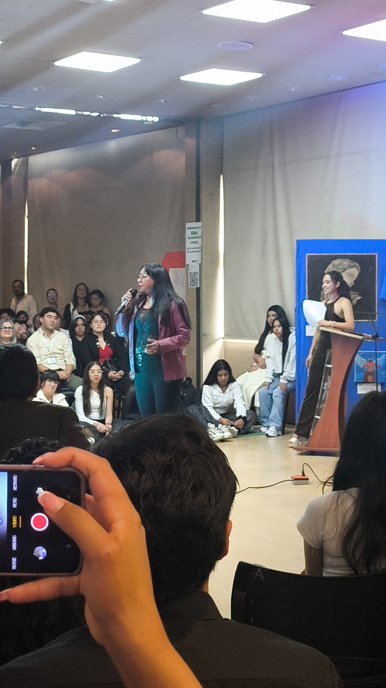
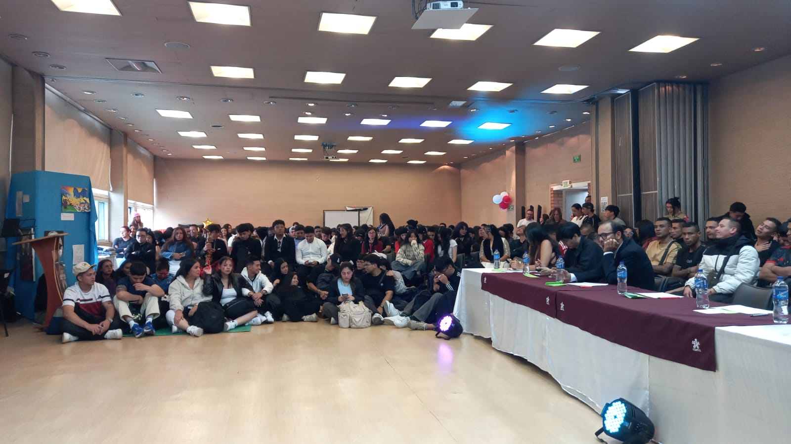
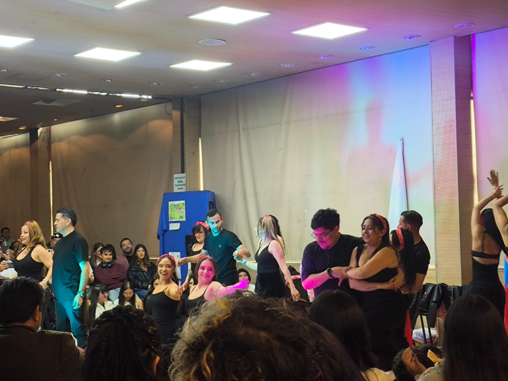
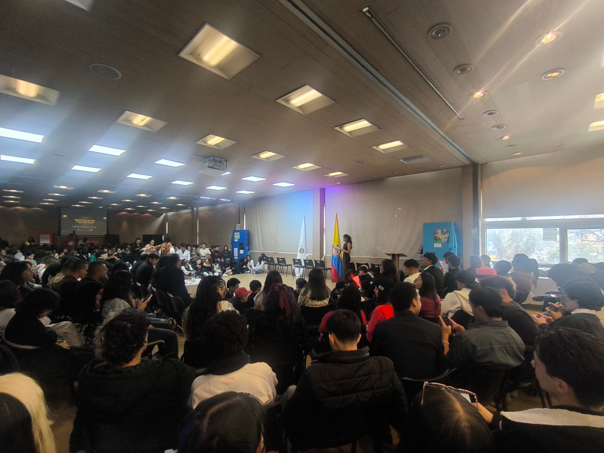
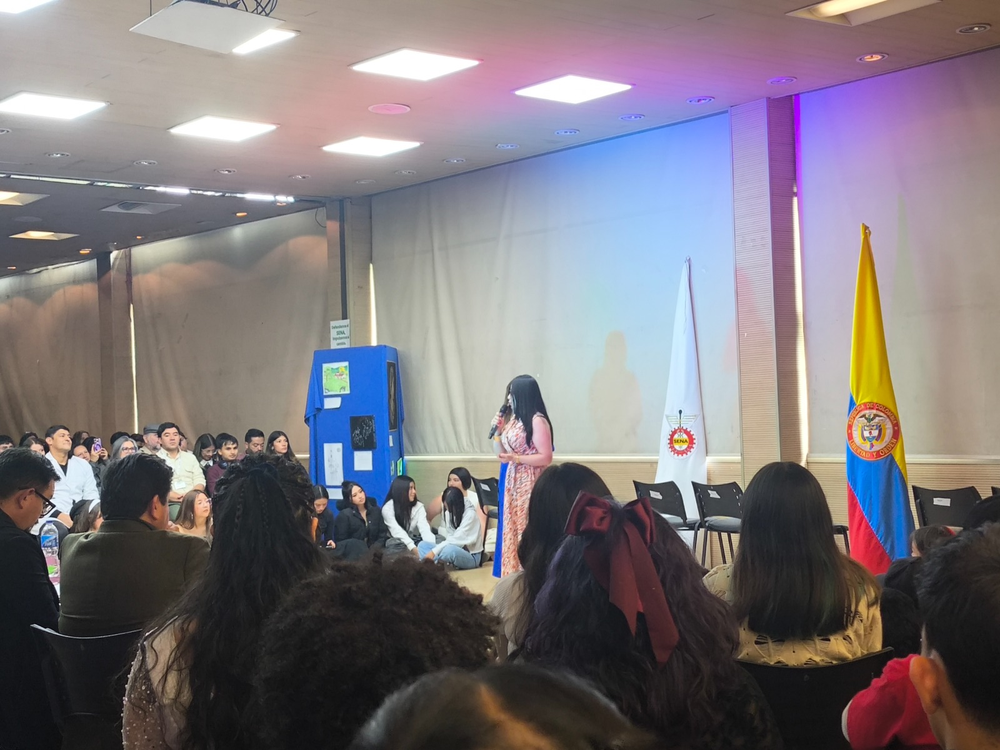
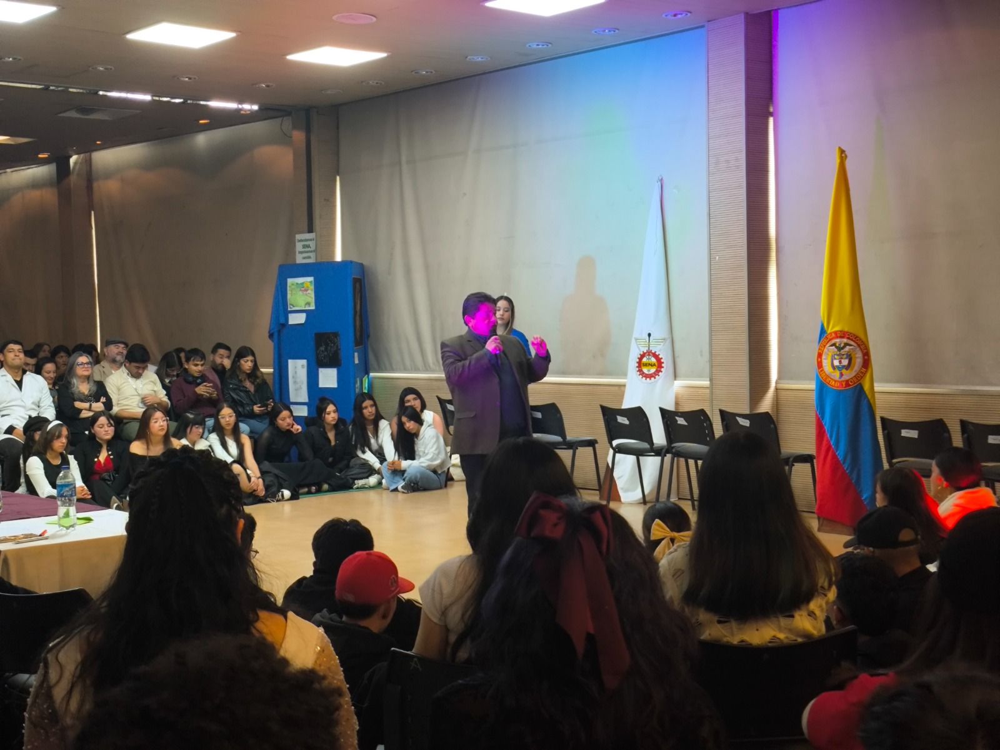

Galería de la Batalla de Talentos






Glosario del Evento
- 1. Aprendiz
- Estudiante en formación teórica-práctica dentro del SENA, protagonista central de la muestra de talentos.
- 2. Retrato
- Representación artística de una persona, enfocada principalmente en su rostro y expresiones, una de las categorías destacadas del evento.
- 3. Claroscuro
- Técnica de dibujo y pintura que consiste en el uso de contrastes fuertes entre volúmenes iluminados y sombreados para destacar elementos.
- 4. Composición
- Distribución equilibrada de los elementos artísticos (formas, colores, líneas) dentro del espacio de una obra visual.
- 5. Boceto
- Esquema o dibujo preliminar que sirve de base para el desarrollo posterior de una obra de arte definitiva.
- 6. Perspectiva
- Técnica utilizada para representar objetos tridimensionales en una superficie bidimensional, simulando profundidad y posición relativa.
- 7. Creatividad
- Capacidad o habilidad del ser humano para inventar o crear cosas a partir de ideas originales, clave en la competencia.
- 8. Auditorio
- Espacio físico diseñado para albergar al público, jurados y participantes durante las presentaciones en vivo.
- 9. Expresión Artística
- Manifestación de ideas, pensamientos y emociones a través de lenguajes como la pintura, el dibujo, la música o el teatro.
- 10. Técnica Mixta
- Modalidad artística que consiste en emplear dos o más técnicas o materiales diferentes (por ejemplo, óleo y carboncillo) en una misma obra.
- 11. Lienzo
- Superficie de tela tejida que sirve como soporte para las creaciones pictóricas y dibujos en gran formato.
- 12. Jurado
- Grupo de expertos encargados de evaluar las capacidades, destrezas técnicas y originalidad de las muestras artísticas presentadas.
- 13. Proporción
- Relación armónica y equilibrada entre las diferentes partes de un todo, fundamental para lograr realismo en la creación de retratos.
- 14. Paleta de Colores
- Gama o variedad de tonalidades elegidas por el artista para dar vida, atmósfera y coherencia estética a su propuesta visual.
- 15. Estética
- Rama de la filosofía y el arte que estudia la percepción de la belleza, la armonía y los estímulos sensoriales en las obras creadas.